群馬県
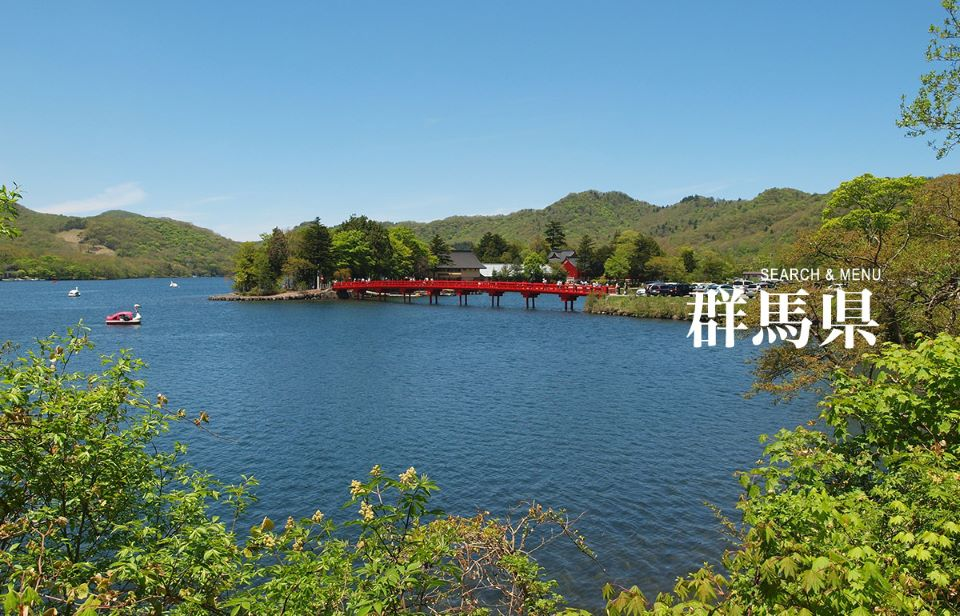
画像提供元：ググっとぐんま写真館
-
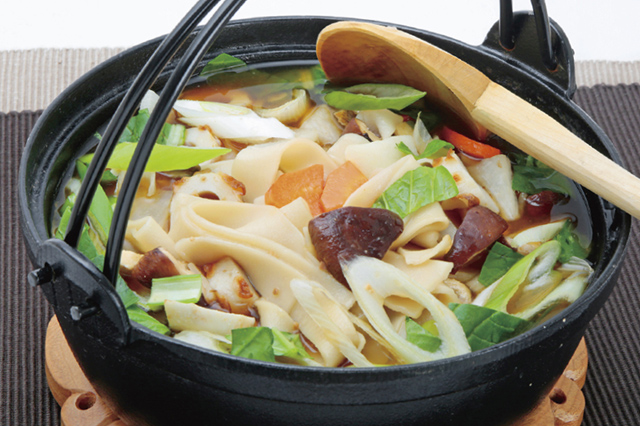
おきりこみ／おっきりこみ
群馬は小麦粉の名産地。水はけのよい田んぼや冬に吹く乾燥した冷風・からっ風の影響...
-
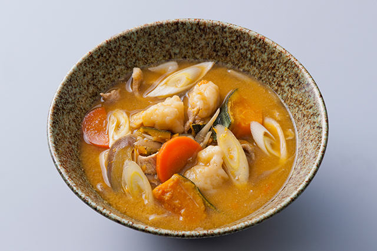
すいとん
昔から米と麦の二毛作が行われてきた群馬では、特に小麦粉の生産が盛ん。それゆえに...
-
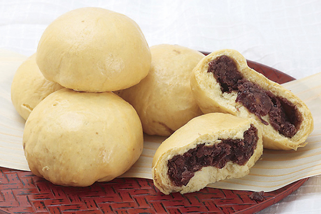
炭酸まんじゅう
群馬は「ぐんま百名山」として100山を選定するほど、豊かな山脈が広がるエリア。...
-
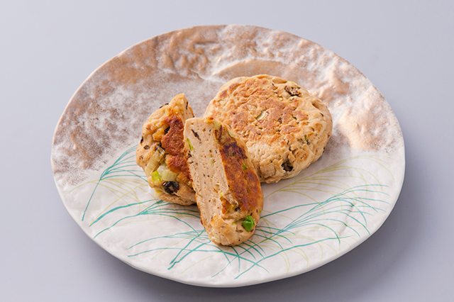
やきもち
群馬は利根川から流れる豊かな水源があるほか、日照時間は長く全国トップクラスである...
-
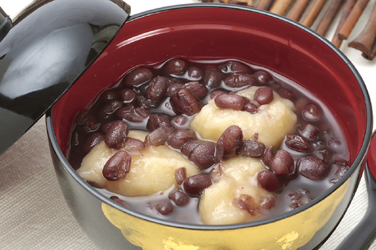
あまねじ／あまだんご
米の収穫が終わった秋頃から、群馬では小麦を栽培して二毛作を盛んに行っている。その...
-
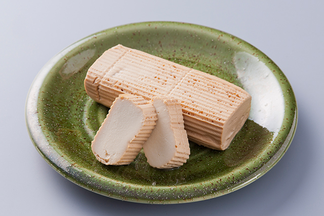
しめ豆腐
食糧不足で肉や魚などが不足していた時代、大豆はたんぱく源として重宝されていた...
-
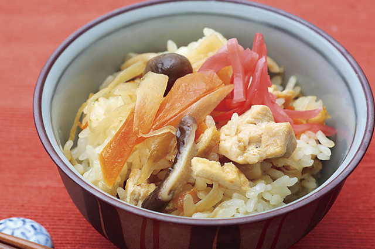
かて飯
米が不足していた時代は、米の代わりを補うような料理がさまざまに考案されていた...
-
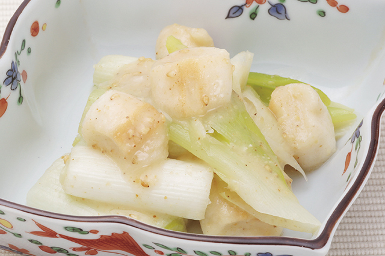
ねぎぬた
群馬県で生産されている特産品の一つに、ねぎがある。根深ねぎや上州ねぎなども...
-
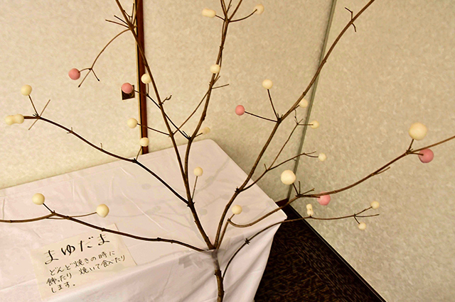
まゆ玉
群馬は古くから養蚕業が盛んで、現在もオリジナルの蚕品種を使用した「ぐんまシルク...
-
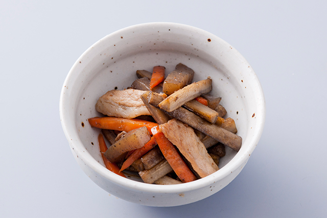
上州きんぴら
1983年、第38回国民体育大会「あかぎ国体」が群馬県で行われた。このとき群馬...
-
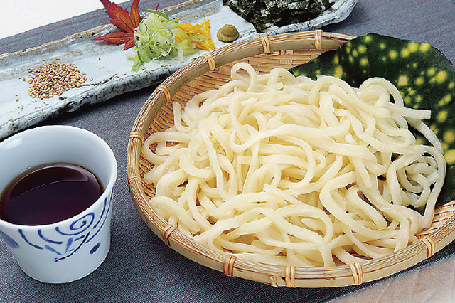
群馬のうどん
粉食文化が根づく群馬で、主食として親しまれている「うどん」。各地域の気候や特色...
-
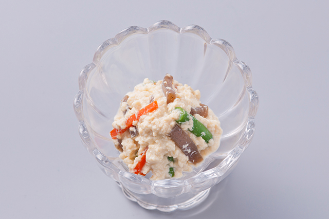
こんにゃくの白和え
「こんにゃくの白和え」は豆腐とごまをすりつぶした衣でこんにゃくを和えた料理。白...
-
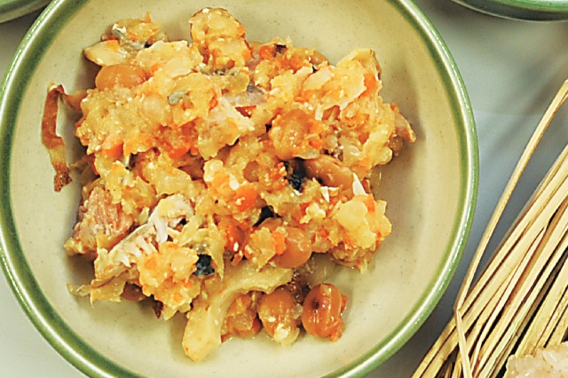
すみつかれ
「しもつかれ」、「すみつかり」、「しみつかれ」などとも呼ばれる。正月に食べた鮭の...
-
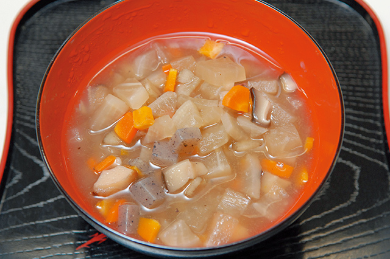
ざく煮
群馬ではもともと、秋のえびす講・正月えびす講(春えびす講)や節分などの行事に...
-
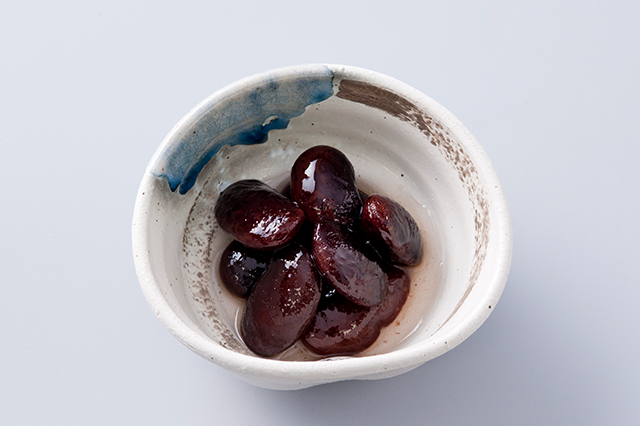
花いんげんの煮豆
野菜やこんにゃく芋、フルーツなどさまざまな農畜産物を栽培している吾妻地域...
-
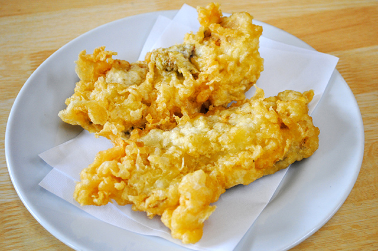
なまずの天ぷら
群馬県の東毛にある板倉町は「群馬の水郷」と呼ばれるほど水源が豊か。現在も全国最大...
-
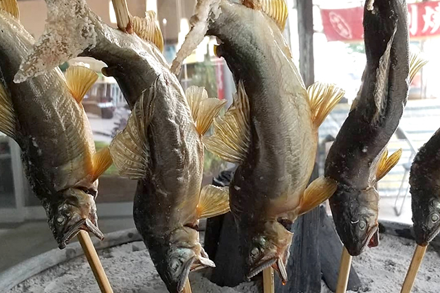
鮎塩焼き
美しい河川が多くある群馬では、多様な川魚が豊かに育ち、それらを活かした郷土料理...
-
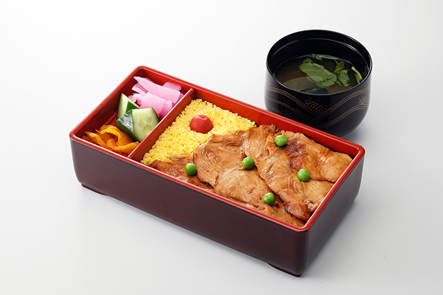
鶏めし
農畜産物が豊富に生産されている群馬では、鶏肉もまた上質なものを育てている。特に...
-
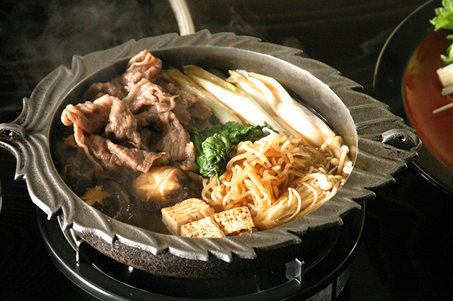
すき焼き
群馬には国内で初めてEUに輸出された「上州牛」や、甘楽郡下仁田町で栽培される太...
-
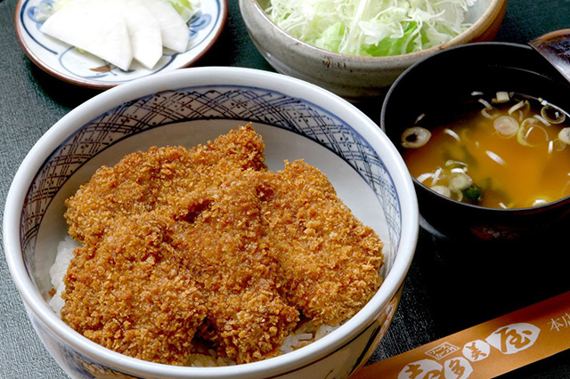
ソースカツ丼
群馬は30種以上の銘柄豚が存在するほど、豚肉の名産地として知られている。県内で生...
-
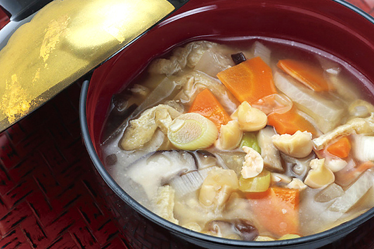
呉汁
農作物が豊富に育つ群馬では、風味豊かな大豆を多く生産している。県として「かぶら...
-
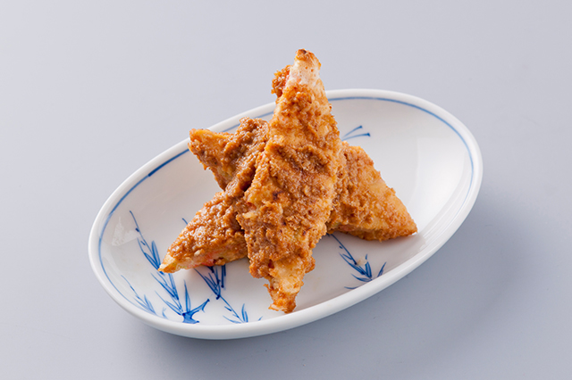
じりやき
おきりこみやすいとん、炭酸まんじゅうなど、小麦粉を使った郷土料理を多く持つ群馬...
-
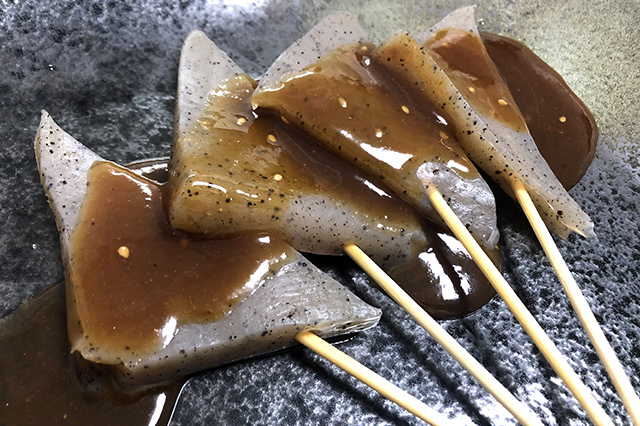
こんにゃく味噌おでん
群馬の特産物と言えば、こんにゃく芋。収穫量は全国第1位（農林水産省「令和2年産...
-
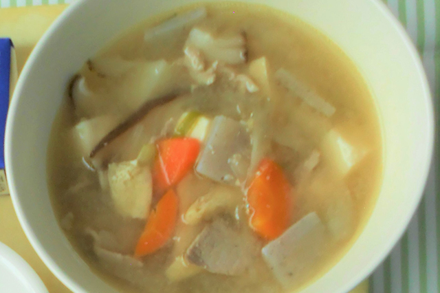
こしね汁
群馬県の南部にある富岡市は自然豊かな街。赤城山、榛名山とともに上毛三山と呼ばれ...
-
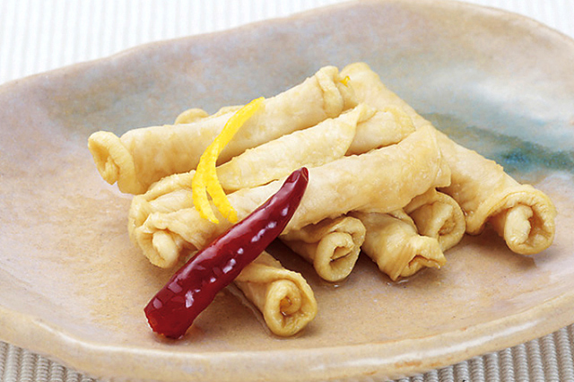
ゆず巻き
冬の群馬は、山地を越えて降りてくる乾いた風「からっ風」が吹く。また、冬の時期は...
-
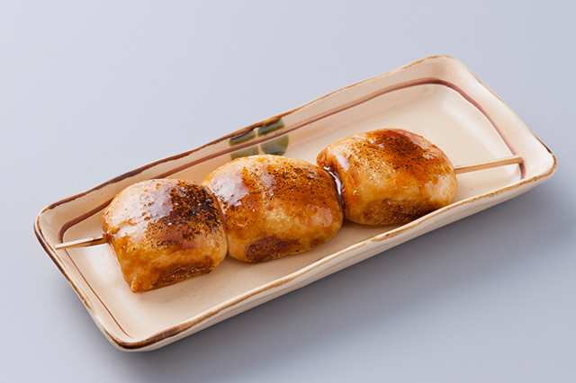
焼きまんじゅう
小麦が盛んに生産されている群馬では、小麦粉を使った郷土料理が多く親しまれている...
-
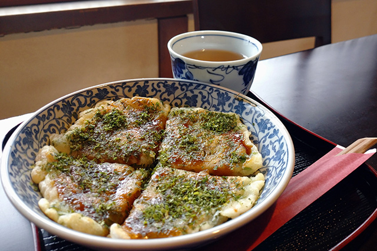
ぎゅうてん
小麦の生産が盛んな群馬では、小麦粉を使った料理がたくさん食べられている。もと...
お問合せ先
大臣官房 新事業・食品産業部外食・食文化課食文化室
代表：03-3502-8111（内線3085）
ダイヤルイン：03-3502-5516